Galeri
Dokumentasi Kegiatan Desa

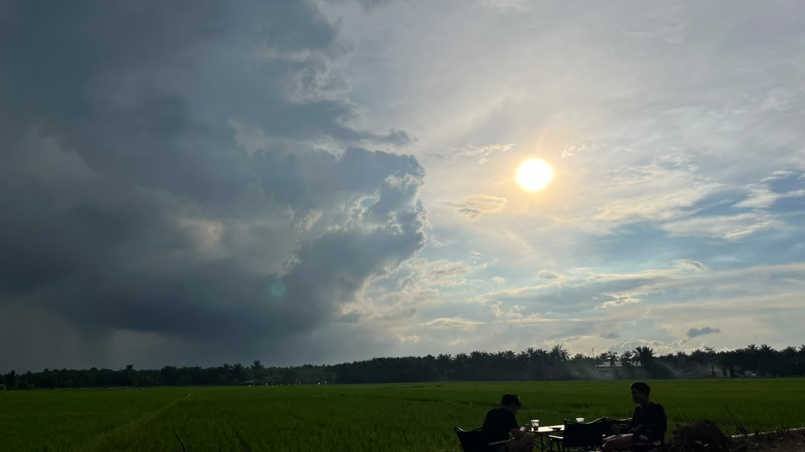
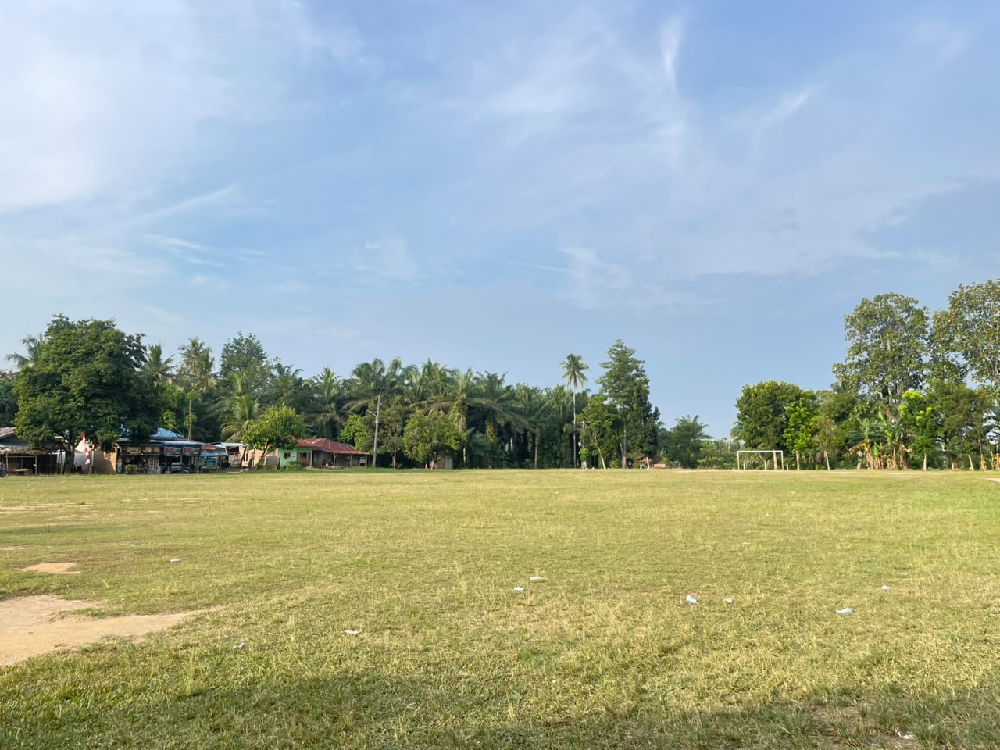
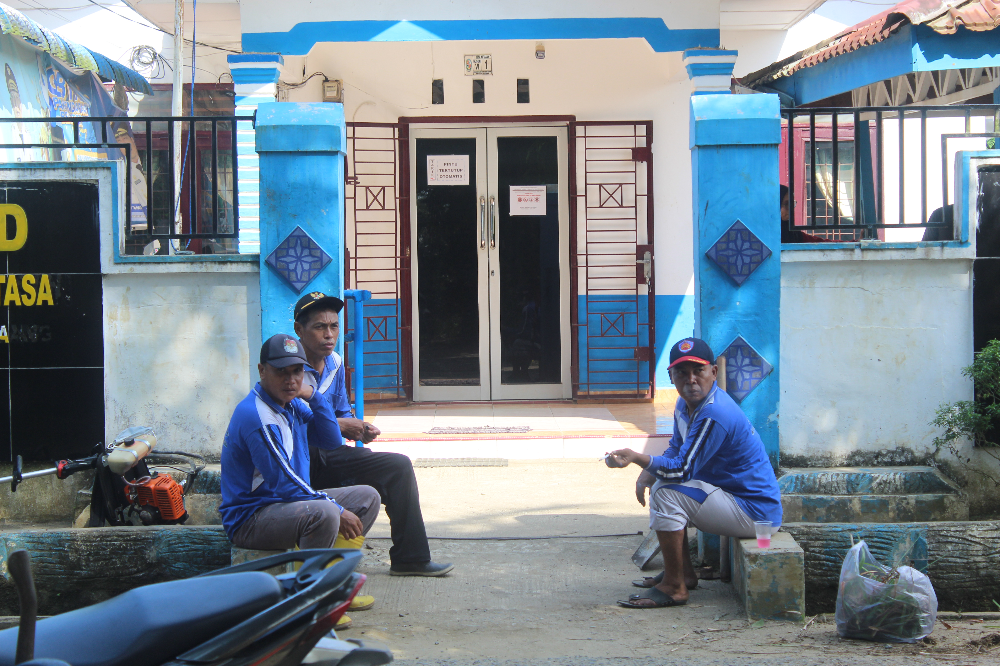
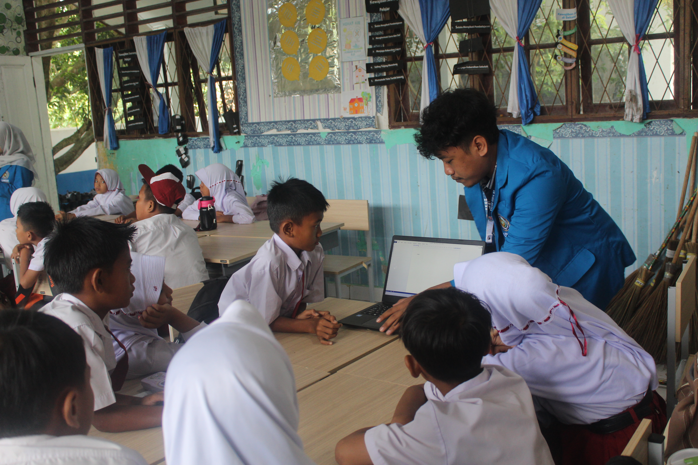
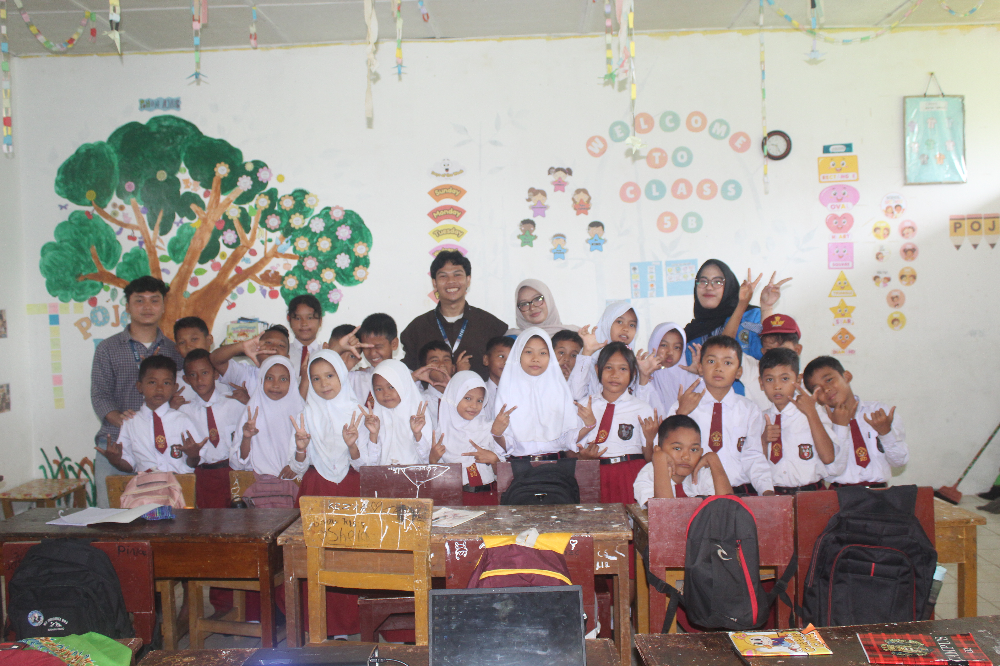
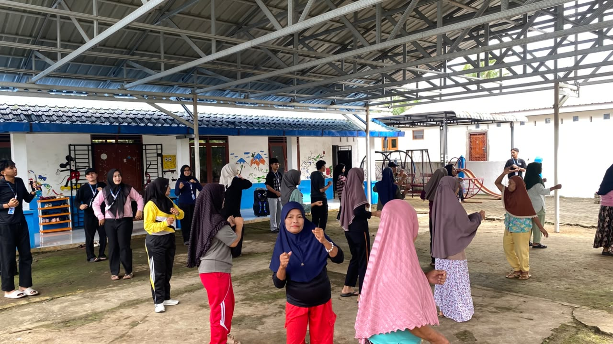
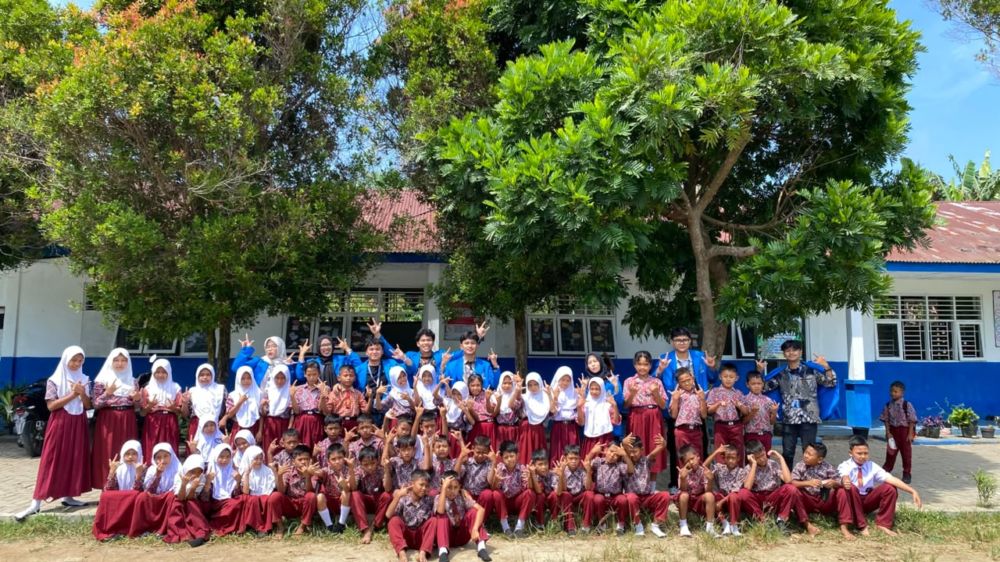
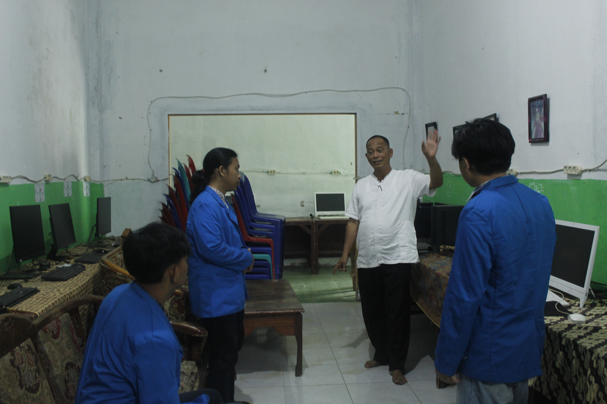
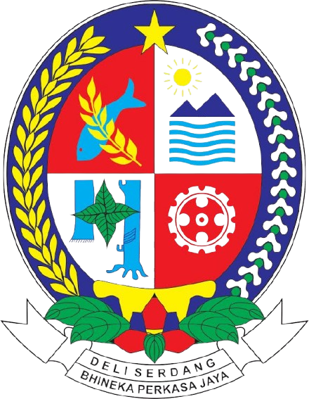
Kecamatan Galang • Kabupaten Deli Serdang
Website Profil Resmi
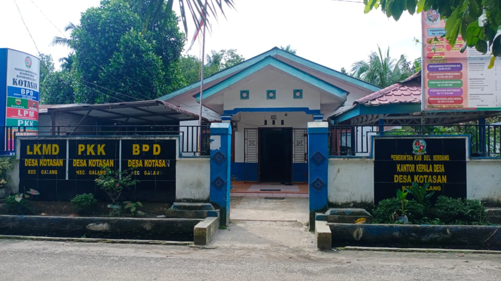
Desa Kotasan merupakan salah satu desa yang berada di Kecamatan Galang, Kabupaten Deli Serdang, Provinsi Sumatera Utara. Desa ini memiliki masyarakat yang hidup berdampingan dengan semangat kebersamaan, gotong royong, dan kekeluargaan yang masih terjaga hingga saat ini. Sebagai wilayah pedesaan, Desa Kotasan memiliki potensi di berbagai sektor, terutama pertanian, perkebunan, serta usaha masyarakat yang menjadi sumber mata pencaharian utama penduduk. Pemerintah desa terus berupaya meningkatkan kualitas pelayanan publik, pembangunan infrastruktur, pemberdayaan masyarakat, dan pengembangan potensi desa demi terciptanya kesejahteraan bersama. Dengan semangat pembangunan yang berkelanjutan, Desa Kotasan berkomitmen menjadi desa yang maju, mandiri, dan mampu memberikan pelayanan terbaik kepada seluruh masyarakat.
Informasi singkat mengenai Desa Kotasan.
Jumlah Penduduk
Jumlah Dusun
Fasilitas Umum
Luas Wilayah (Ha)
Visi Pemerintah Desa Kotasan merupakan gambaran kondisi masa depan yang dicita-citakan dapat terwujud dalam kurun waktu enam tahun yaitu pada akhir tahun 2022–2028. Sesuai dengan visi Kepala Desa terpilih maka dapat disusun visi Desa Kotasan sebagai berikut:"GOTONG ROYONG MEMBANGUN DESA YANG JUJUR, ADIL, AMANAH, BERBUDAYA DAN BERAKHLAK MULIA."
Perwujudan visi pembangunan Pemerintah Desa ditempuh melalui misi pembangunan desa. Misi merupakan komitmen untuk melaksanakan agenda-agenda utama yang menjadi penentu keberhasilan pencapaian visi pembangunan.
Informasi mengenai Kepala Desa dan struktur organisasi Pemerintah Desa Kotasan.
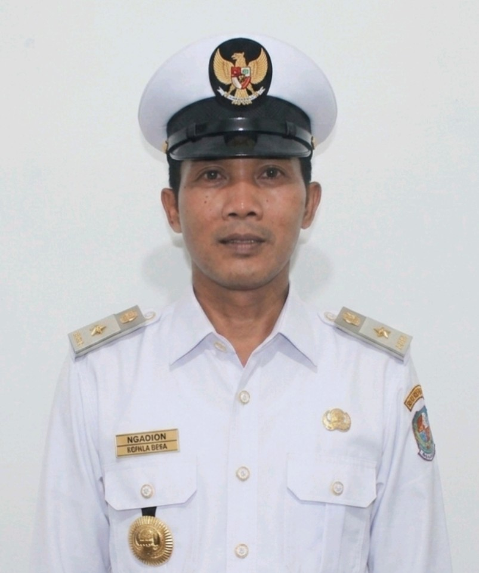
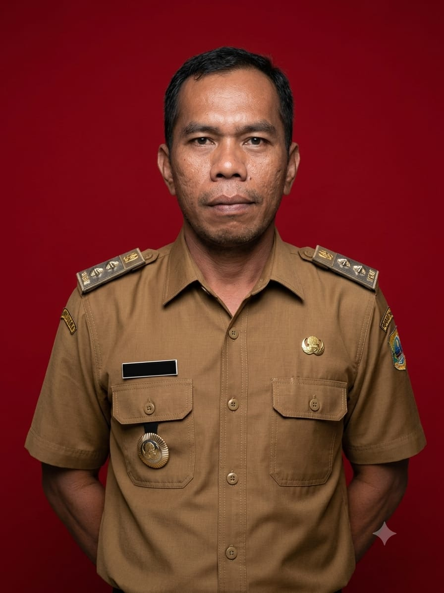
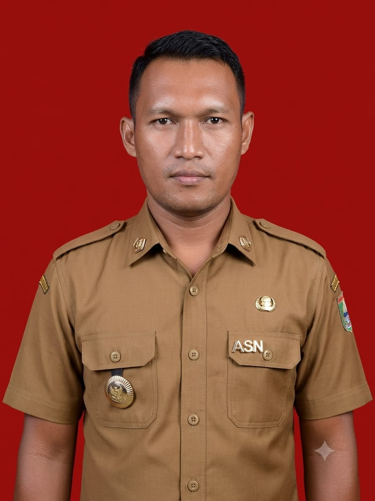
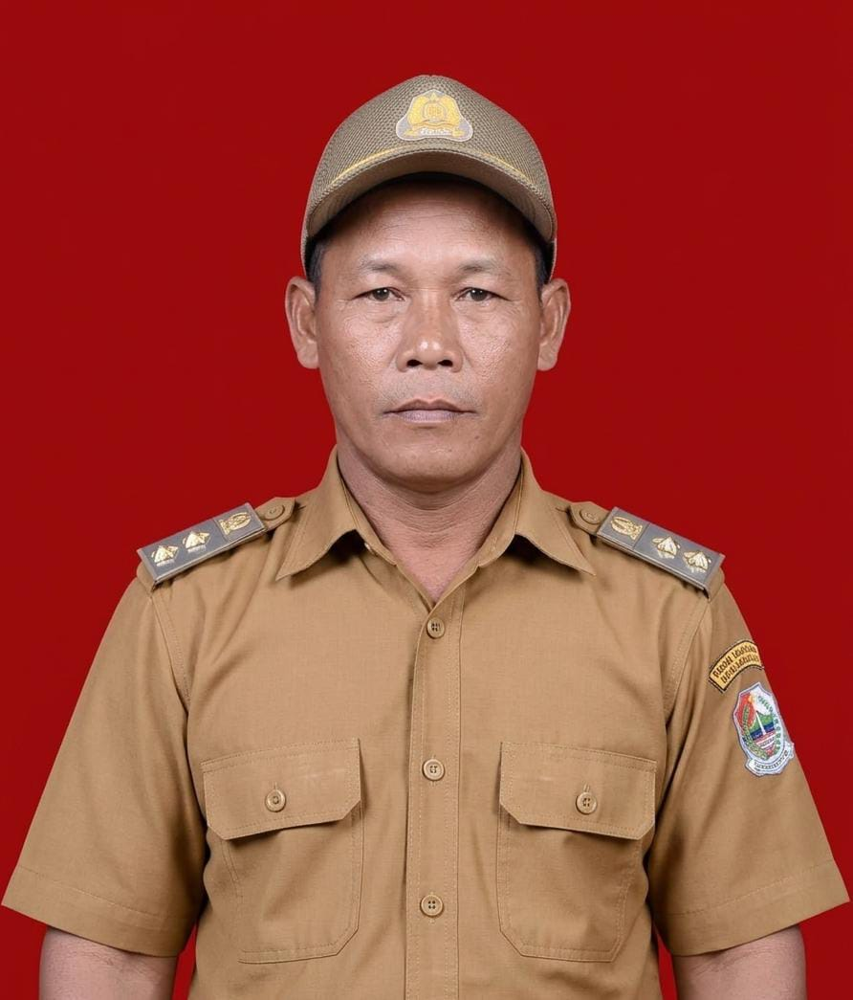
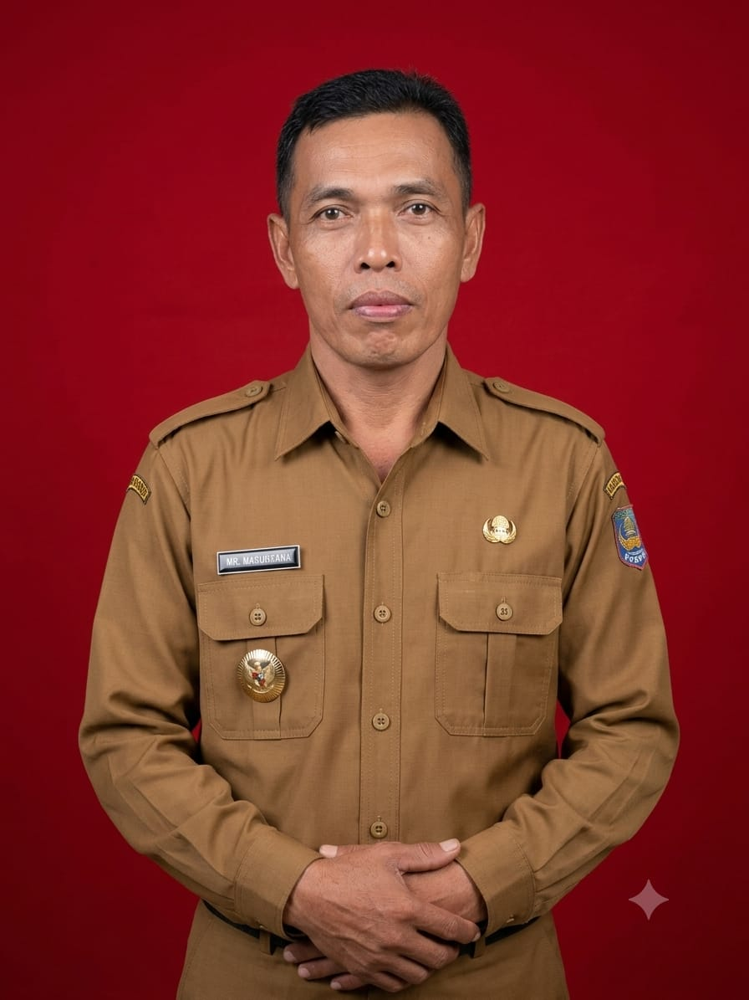








Halaman ini menampilkan peta administrasi Desa Kotasan beserta batas wilayah, batas dusun, dan lokasi fasilitas umum yang telah dipetakan.
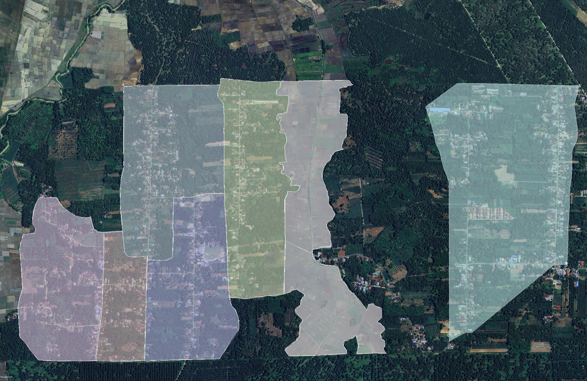